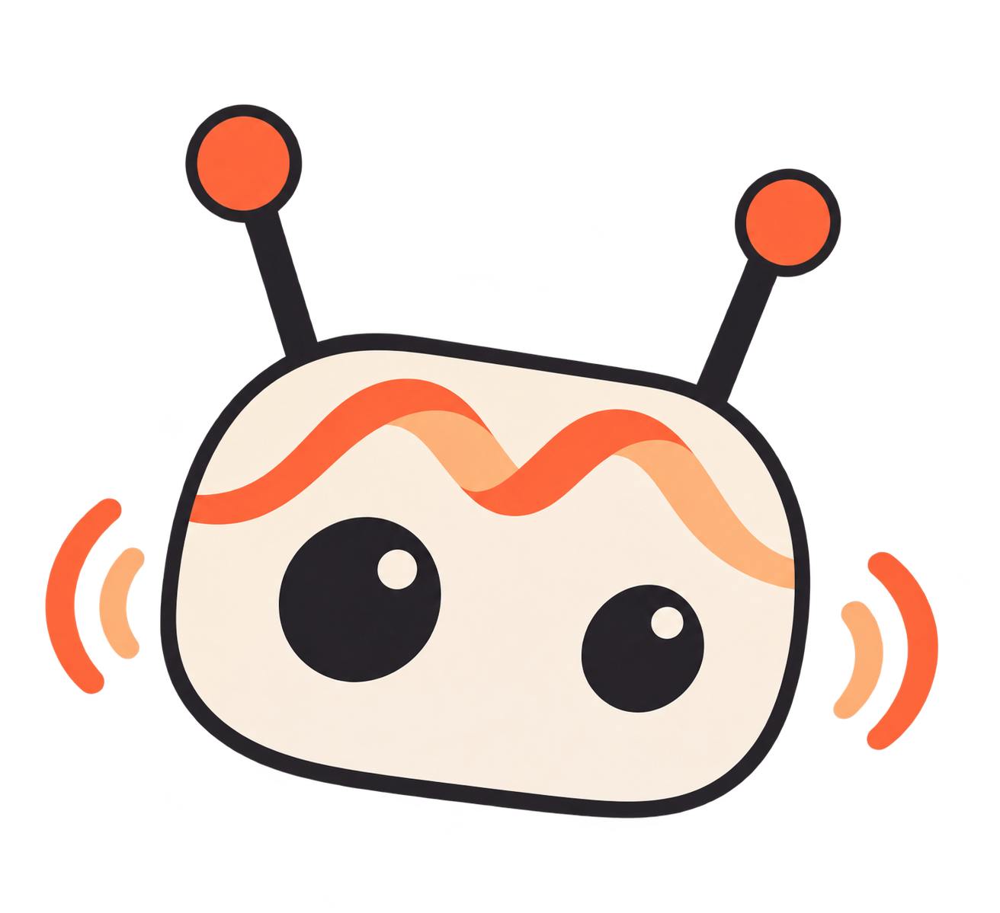
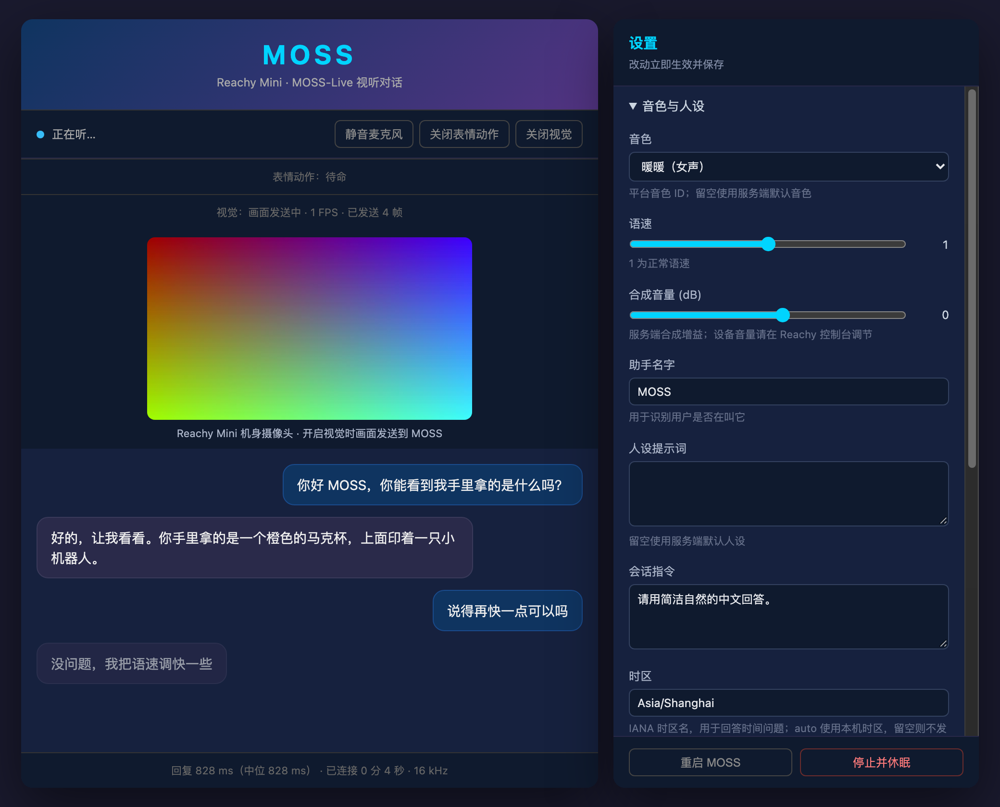

Voice and visual conversations with expressive motion for Reachy Mini, powered by MOSS-Live
MOSS-Live recognizes speech, holds the conversation and speaks in one realtime session. In full duplex you can interrupt the robot mid-sentence.
Opt in, and frames from the robot's own camera go to the same session, so you can ask about what is in front of it.
Happy, agreeing, thinking and listening gestures from the official recordings, speech-driven head wobble, and a resting posture you choose.
mossy start, stop, status and config run the Reachy daemon and the app, and change settings while it talks.
Pick the voice, speaking rate, persona and posture in the browser. Changes apply to the running conversation and are saved.
The page and mossy status report the time from the end of your speech to the first reply audio, and the round trip to MOSS-Live.

PYTHONPATH=src python3 -m mossy.cli install
mossy config set MOSS_API_KEY=your-key
mossy startFor macOS with Reachy Mini Control; a MOSS API key is required. The README covers other setups, every command and every setting.